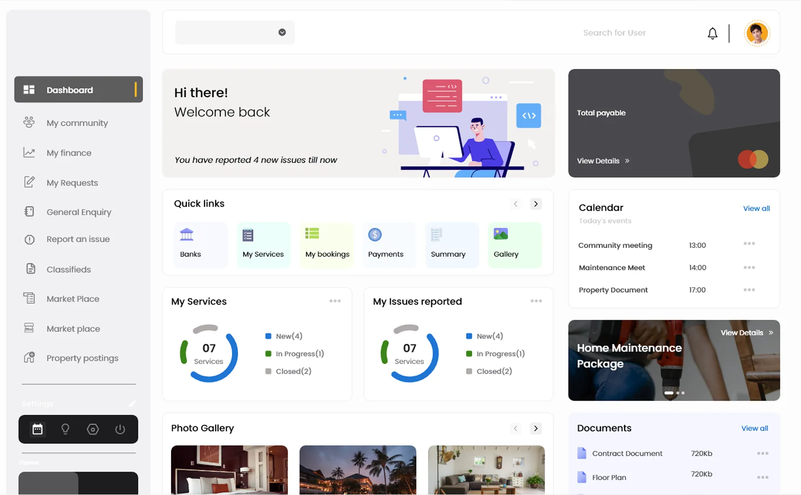
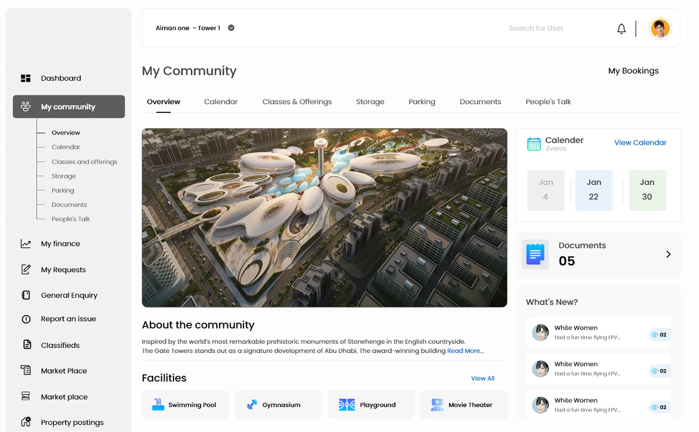
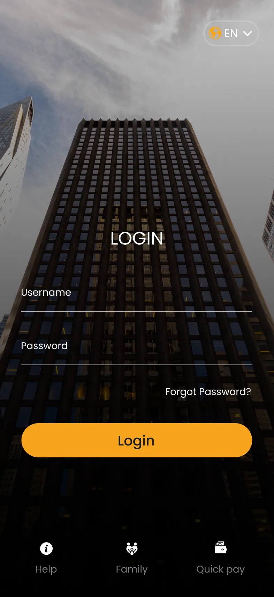
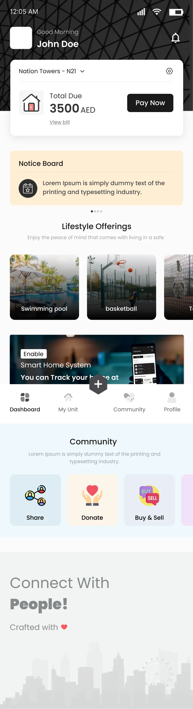
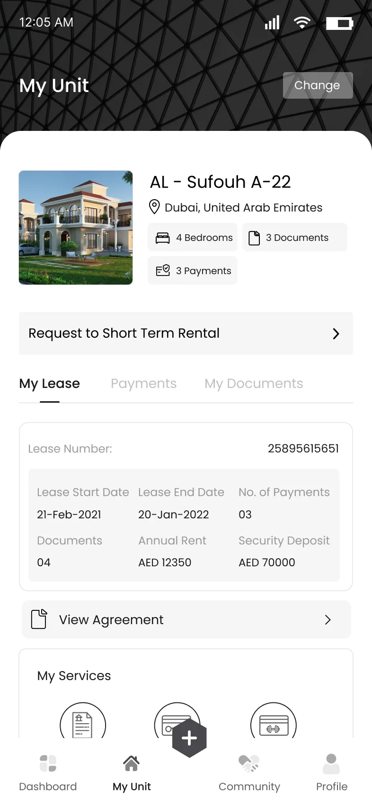
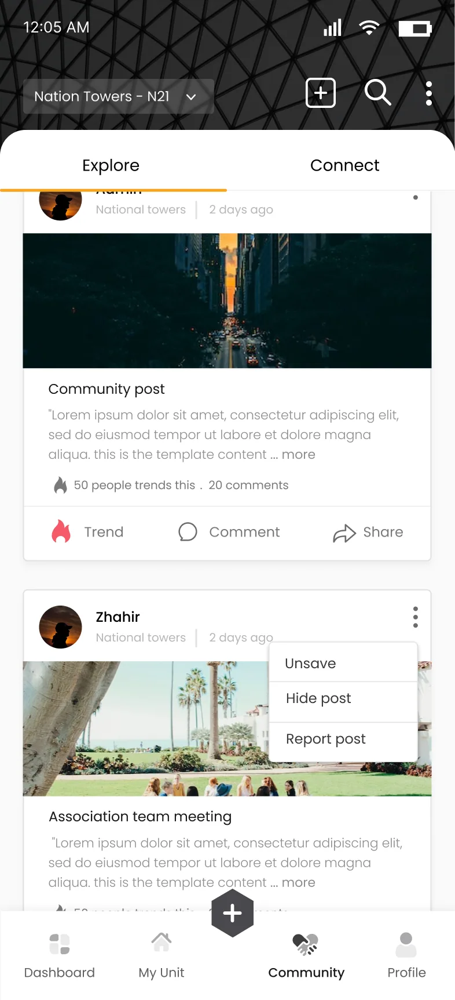

Blue Box
One platform for everything a residential community needs, for the owners who manage it and the tenants who live in it.

The problem
Owners had no single place to manage their community and property. Tenants had the same problem from the other side: requests, payments and community updates were scattered across different channels.
The goal was a platform that fits what both groups need and what the business needs, on web and on mobile.
Process
Who it's for
A business owner with little spare time, who wants every community and property task in one place.
- Can't find old posts and requests
- Can't see how far a request has progressed
- Doesn't know who to contact in an emergency
A PR agent who travels often, and needs her home looked after while she's away.
- Deliveries go missing while she's travelling
- Can't book repairs around her own availability
- No way to track whether the work was done
What card sorting changed
Web portal
Four screens from the portal. Pick one to see it.

My Community: an overview of the community with its calendar, documents and facilities.
Resident mobile app
The same product in a tenant's pocket: moving in and out, raising maintenance requests, paying, and taking part in the community.




Marketing website